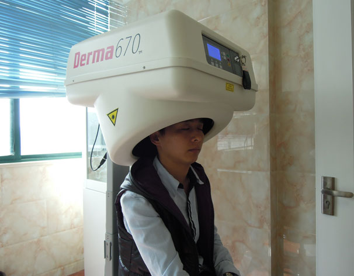

-
每日掉发100根以上已经超出正常更替数量，说明毛囊处于亚健康状态，可能会发展为病态脱发，应该及时主动的去正规医院进行毛囊保养护理。
【江城护发方案】纳米波雾化气疗
调节皮脂腺油脂代谢分泌平衡，促进头皮血液循环修复免疫系统，消除炎症。
点击咨询
江城独创：清热祛脂综合疗法
- 毛发检测
- 雾化气疗
- Car-光子治疗仪
- "龙卷风"生物光疗
- 中药调理
- 美国308nm准分子激光治疗仪
-
分清脱发类型 检查毛囊活性
通过毛发检测检查毛囊密度、毛囊细胞存活、皮脂腺代谢能力，查出患者脱发类型，再进行针对性的治疗，做到不误查、不误诊、治标更治本。
-
改善毛发根部生长环境 紧固发根停止脱发
毛囊DP细胞的断裂抑制毛母细胞分裂而导致毛囊一直处于休眠期，所以Car-光子生发治疗仪修复DP细胞，改善毛发根部生长环境，加快新陈代谢，紧固发根。
-
调节皮脂代谢去油脂 促进淋巴液循环消炎症
波气疗仪通过热、药、力三者之间的协同作用来取效，调节皮脂腺油脂代谢分泌平衡，促进头皮血液循环，加快淋巴循环，从而促进炎性物质的清除，促进毛囊组织修复和再生的功能，修复免疫系统。
-

激活毛囊细胞 促进毛发生长
"龙卷风"又叫Derma 670nm激光。利用670nm波长激光的生物刺激特性，刺激休眠期的毛囊进入生长期，加速毛囊细胞分裂，促进营养成分吸收，提高胶原纤维的再生能力,增加毛囊的生命力，促进毛发生长。
-
恢复毛发正常生长周期 固发养发
调节体内激素分泌水平，改善毛囊生发环境，使毛囊细胞全面恢复机能，促进毛母细胞分裂，合成毛发，加快毛发营养吸收，增强毛发韧性，使毛发健康生长进入正常周期。
-

从根本上解决斑秃，杜绝复发
308准分子激光是准分子激光的一种，即氯化氙准分子激光，连续的脉冲气体激光，其波长在UVB范围内对治疗斑秃部位细胞凋亡有非常优异的效果，改善和促进局部血液循环，促进毛发毛囊自愈功能。